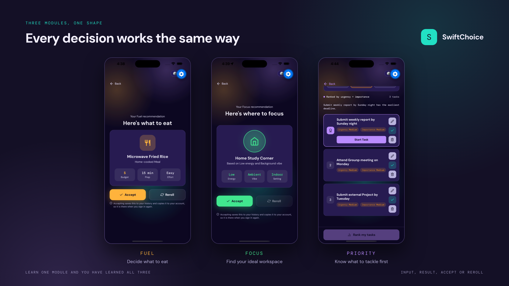
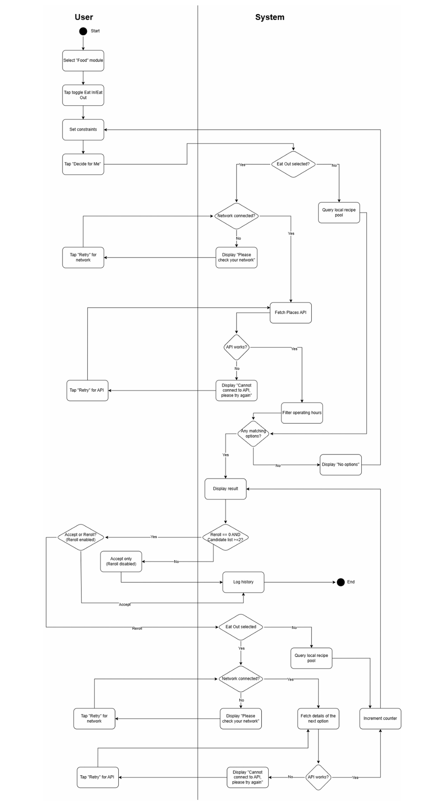
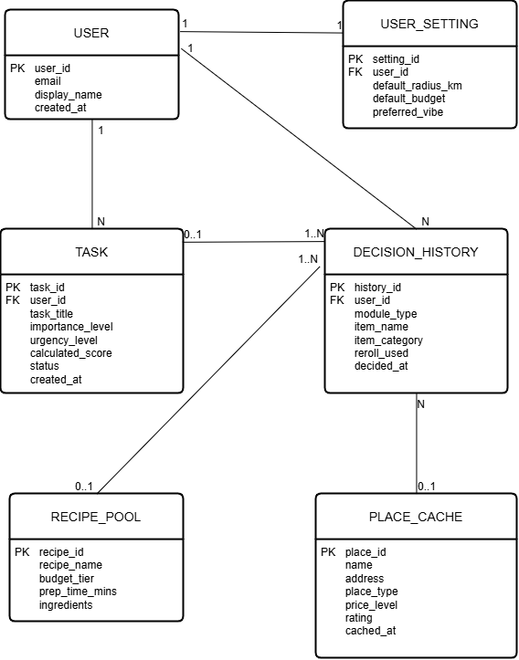

SwiftChoice: Decision-Support
System Requirements Specification
Eliminating daily choice overload through a constrained, single-recommendation mobile workflow (Fuel, Focus & Priority).

Figure 1: Constrained single-recommendation mobile workflow designed to eliminate multi-option browsing fatigue.
1. The Problem: Cognitive Overload & Decision Fatigue
Primary user research (n=21) alongside Australian consumer benchmarks revealed severe friction in routine daily choices, yet only 4.8% actively used a decision-support app:
Core Product Strategy: Instead of endless catalogs, SwiftChoice enforces a strict 1-recommendation output per session with a 1-time reroll guardrail across three modules: Fuel, Focus, and Priority.
2. MVP Scoping & Requirements Engineering
Clear functional boundaries were established to validate core decision-support mechanics rapidly while deferring non-essential complexity:
| In-Scope (MVP Release) | Out-of-Scope (Deferred to Phase 2) |
|---|---|
| Fuel Module: Single venue or recipe recommendation filtered by budget, prep time, and distance with a strict 1-time reroll limit. | Commercial Tiers: Freemium vs. SwiftChoice Pro subscription billing models. |
| Focus Module: Curated study/work space matching based on real-time user energy level and environment vibe. | Dynamic Weather Matching: Real-time weather API modifiers altering venue recommendation weights. |
Priority Module: Deterministic weighted task ranking (Score = 0.6*Importance + 0.4*Urgency) with auto-advancing queue states. |
Social & Web Extensions: Collaborative group decision rooms and desktop browser clients. |
| Core Infrastructure: Firebase Authentication, local venue caching, and unified decision history logging. | Third-Party Bookings: Direct table reservations or calendar sync integrations. |
3. System Modeling & Relational Architecture
To ensure unambiguous engineering handoff, 8 formal User Stories (with Given-When-Then acceptance criteria) and system state lifecycles were translated into UML process models and a normalized 3NF relational schema (full details available in the SRS PDF below):

Figure 2: Fuel Module Workflow & Reroll Logic.

Figure 3: 3NF Relational Data Model featuring UUID primary keys, 1:N transaction logging, and local API caching.
- API Latency Mitigation (
PLACE_CACHE): Local caching entity stores venue metadata, operating hours, and price tiers to keep response latency under 2.0 seconds while reducing Google Places API costs. - Transactional Integrity: Enforced foreign key constraints (
USERtoDECISION_HISTORY1:N) and strict enum state validations across active sessions.
4. Traceability & Quality Assurance (UAT)
Maintained a Requirements Traceability Matrix (RTM) validating 9 end-to-end UAT test cases across input validation, session guardrails, and external API resilience:
| Test Domain | Scenario & Edge Case Tested | UAT Result |
|---|---|---|
| Session Guardrails | Enforcing 1-time reroll lock and state transitions across active sessions. | Pass (3/3) |
| API Resilience | Graceful fallback on Google Places API timeout or partial Weather widget failure. | Pass (3/3) |
| Data & Validation | Form input constraints and chronological DECISION_HISTORY logging. |
Pass (3/3) |
Complete Systems Requirements Specification (SRS)
Read the complete technical specification document directly below or open/download a copy: